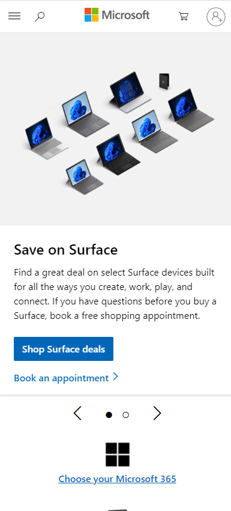

Contrast
Microsoft Office
office.comFonts are easily readable across the site because of the color selections. Foreground fonts and background images have excellent contrast. The stark white for much of the site contrasts nicely, and when resized to various sizes, the intro paragraph wraps to the correct spot so that there is no overlap with the background images darker areas.
Repetition
YouTube
m.youtube.comAs you scroll, you see the same size thumbnail, with the same size channel icon, with the same location for details. When you click into any video, the layout for every video is the same. Comment review is invoked always in the same manner. Iconography is the same simple thin black outline with text underneath across all pages. When an icon is selected, the color inverts. You have muscle memory using this site because it is so consistent.
White Space
Microsoft
microsoft.com White space is everywhere on this site. The incredibly simple color pallette of white, black, blue and gray provide wonderful contrast for readability. It feels airy and roomy, not crowded. The simple Iconography and photography selections that predominantly stay in the color pallette add to the clean design.